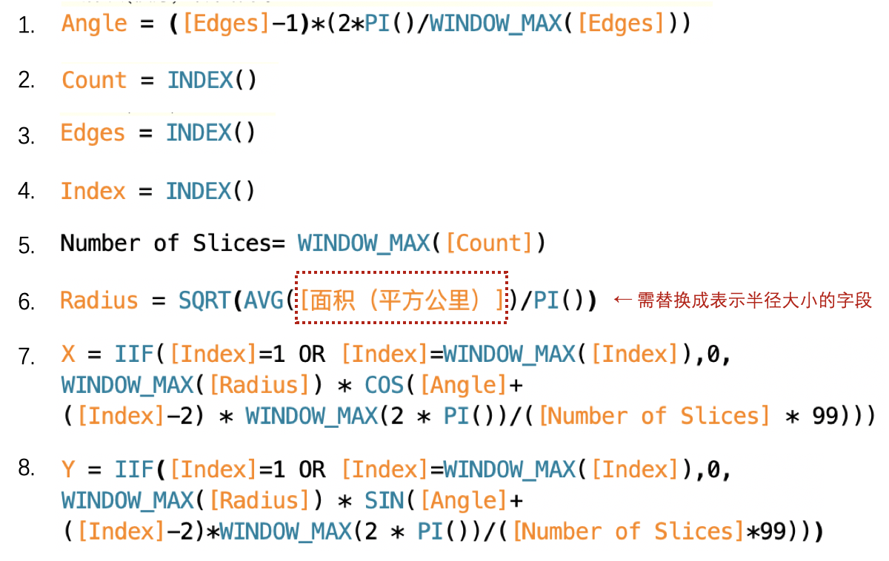

发展背景
由著名的英国护士及统计学家弗罗伦斯·南丁格尔发明，又名为极区图，南丁格尔自己常昵称这类图为鸡冠花图，是一种圆形的直方图。在19世纪50年代的克里米亚战争中，南丁格尔使用这种图表揭示英军死亡的主要原因实际是在战场外感染疾病，以及在战场上受伤后没有适当的护理而伤重致死，真正死在战场上的人反而不多，汇报对象是那些不太能理解传统统计报表的公务人员，甚至成功打动了维多利亚女王，从而成功改善了战地医院的卫生条件，为伤员们解决了必须的物资资源，英军伤员的死亡率因此迅速下降。
数据准备
我们以下图数据为基础来做图，做南丁格尔玫瑰图的基础数据需要两个必备的字段： 分类（用于分区）和 半径大小（用于展现分区的大小）。这里分类可以有多级，即在每个分区中进一步通过不同颜色拆分类别。
在正式做图之前，我们要对源数据进行处理：① 新增一列，命名为Path，取值均为1 ② 复制所有数据，将复制后的数据Path列修改为102
实现过程
打开 Tableau 连接数据，创建 [Path] 字段的数据桶，数据桶大小修改为1。
如下图创建8个计算字段。其中 Radius 需将半径字段根据实际数据进行替换，其他字段无需做修改。

文字版（供复制）：
- Angle = ([Edges]-1)(2PI()/WINDOW_MAX([Edges]))
- Count = INDEX()
- Edge = INDEX()
- Index = INDEX()
- Number of Slices = WINDOW_MAX([Count])
- Radius = SQRT(AVG([面积（平方公里）])/PI())
- X = IIF([Index]=1 OR [Index]=WINDOW_MAX([Index]),0,
WINDOW_MAX([Radius]) COS([Angle]+
([Index]-2) WINDOW_MAX(2 PI())/([Number of Slices] 99))) - Y = IIF([Index]=1 OR [Index]=WINDOW_MAX([Index]),0,
WINDOW_MAX([Radius]) SIN([Angle]+
([Index]-2)WINDOW_MAX(2 PI())/([Number of Slices]99)))
标记中的图表类型选择为「多边形」。
将「Path(数据桶)」拖入行，勾选「显示缺失值」后，将其拖入「路径」。
将需要用作分区的字段，这里「类型」和「区域」均可以作为分区，假设在这里我们选用“类型”作为分区，将「类型」字段拖入「颜色」。若字段取值过多时，也可先拖入「详细信息」后将其标记修改为「颜色」，
将字段「X」拖如列，将字段 「Y」拖入行，并分别对 X 和 Y （同X）右键，按如下编辑表计算：即 X (Y) 和 Index 选择「Path(数据桶)」，其余字段选择「类型」。
这样我们就得到了基本的玫瑰图
进行调整和美化后得到
注意
缺失值
如果我们希望进行二级分类的拆分，可以将二级分类拖入标记中的「颜色」即可。注意：这里要求两个维度必须均有数值，否则会产生扇形角度不一致的状况。例如下图：
通过透视源数据发现两个维度下存在缺失值，
去掉含有缺失值的字段后，我们发现二级分类可正常显示：
适当对Radius进行调整
在上述存在缺失值的情况下，Radius用AVG可能无法正确反映大小关系。例如在上例中，戈壁的面积求和明显少于有林地，但用AVG后会发现戈壁的均值比有林地更高，因此在图表中也会显示戈壁的面积更大。在这种情况下可对Radius进行适当调整，例如修改为：Radius = SQRT(SUM([面积（平方公里）])/PI())